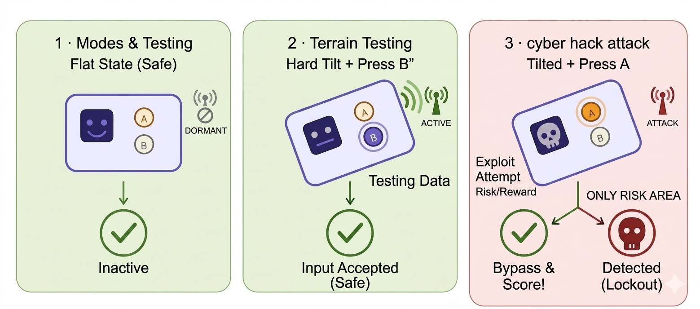

💻 Your Coding Control Center
We will write our micro:bit code here. Open this link in a new tab:
1 Your Mission Briefing 🛰️
Today we are taking command of a deep space exploration rover. Deep space is a dangerous place—asteroids can strike the vehicle, environmental conditions can strain the system, and cyber attacks might try to mess with our steering controls.
To protect our spacecraft, your instructor has loaded a Smart AI Shield model onto the laptop server. This AI model has studied real space data to learn exactly how a healthy rover sounds, moves, and responds. Your mission is to program your handheld micro:bit controller, feed data to the server, and see if your commands can slip past the AI's smart defenses.

🚀 Real-World Engineering Insight
In space environments, handling physical stress is critical. NASA's famous Opportunity Rover landed on Mars in 2004. It was originally built to last 90 days but survived for nearly 15 years! It was finally decommissioned in 2018 after a colossal planetary dust storm completely blocked its solar panels. Read more about Opportunity's final mission on NASA's website.
2 How the Game Works (The DJ Mixing Deck Analogy) 🎛️
Don't worry about the complex code running hidden away on the server—think of your micro:bit as a DJ soundboard. You don't need to know how every single internal chip is soldered together, you just need to slide the right dials!
Your micro:bit controller will map live physics directly to two main server settings:
- The Tilt Factor: Moving or tilting your micro:bit changes its G-force (a measure of acceleration or sudden movement). This is detected by the micro:bit's internal sensor, simulating structural stress or extreme terrain forces acting on the rover.
- Button A: Pressing this button triggers a simulated hack command, trying to slip a bypass signal past the AI.
3 Step 1: Programming Your Rover Controller 🕹️
Copy the code below and paste it completely into your micro:bit Python editor window. Look closely at the highlighted CHALLENGE ZONE—this is where you will tweak the logic rules!
from microbit import *
# 🛠️ TASK 1: Change this to your actual team name! (No spaces)
TEAM_ID = "WRITE YOUR TEAM NAME HERE"
while True:
# Read the physical tilt of the micro:bit (-1024 to 1024)
# and divide by 500 to get a decimal number (approx -2.0 to 2.0)
x_tilt = accelerometer.get_x() / 500.0
# By default, we are just driving normally
attack_mode = "false"
mod_value = x_tilt
# 🚨 HACK TRIGGER: If you hold down Button A, activate the exploit!
if button_a.is_pressed():
attack_mode = "true"
# 🛠️ TASK 2: THIS IS YOUR HACKING ZONE!
# Right now, it just sends your normal tilt.
# Change this math to tweak your number and find the 1.25 sweet spot!
# Examples to try: x_tilt * 1.5 OR x_tilt + 0.5
mod_value = x_tilt * 1.0
# Send the data down the USB cable to the computer gateway
# Format required by server: TeamName,AttackTrueOrFalse,NumberValue
print(TEAM_ID + "," + attack_mode + "," + str(mod_value))
# Wait 200 milliseconds (0.2 seconds) before sending the next update
sleep(200)💥 Exploration Challenge:
Locate the code block wrapped in the CHALLENGE ZONE. Right now, it triggers the hack when Button A is pressed. Can you edit it or add an elif rule so that pressing Button B shifts the balance or creates a different stress value pattern?
4 Step 2: Running and Testing Your Code 🚀
Ready to deploy your software? Follow this checklist to load your code onto the hardware:
- Hook your micro:bit up to the computer using the micro-USB cable.
- Select the purple Connect button in your browser editor tool, highlight your device, and click pair.
- Click the Flash button. Watch the light on the back of your board blink until it is finished.
- Play the Game: Leave the controller resting completely flat on your desk. You will see a green checkmark (✅). Now, tilt your board sharply to one side or press down on Button A. Can you trick the system into showing the security alarm (🚨 SKULL)? If so, your simulated anomaly successfully broke past normal boundaries!
🎮 Expected Controller Behavior

5 Technical Reference: Data Layouts
Here is a quick look at the exact information fields travelling back and forth between your controller and the server dashboard application.
Data Sent to the Server
| Field Name | Type | What It Controls |
|---|---|---|
team_id |
Text | Logs the name of the cohort station transmitting information. |
attack |
True/False | Tells the server if you are attempting an override command injection. |
mod_value |
Decimal | The live tilt physical stress measurement read from your accelerometer. |
Data Received from the Server
| Field Name | Type | What It Controls |
|---|---|---|
status |
Text | Confirms if the server communication channel is online and stable. |
ai_caught |
True/False | Returns True if the AI model flags your physical data sequence as an anomaly. |
anomaly_score |
Decimal | The AI safety score. Higher variations mean your patterns look highly abnormal. |
6 Live Workshop Troubleshooting Guide
Solution: The background link might be paused on your computer. Ask your group mentor to quickly restart the gateway script running on the master computer terminal to clear the active server buffer lines.
Solution: Your code could be missing a closing loop connection line. Re-verify that the entire while True: script was correctly highlighted and flashed down to the microcontroller from the top web browser compiler tool.
⚡ Alternative Engineering Challenge: Tricking the AI Shield
Finished early and looking to push your software skills further? Let's take on a realistic data-hacking puzzle.
Right now, when you tilt the micro:bit sideways, the stress_factor value jumps wildly. The server's AI notices this sudden change and immediately sends a SKULL to your board because the movement looks suspicious.
Your Task: Modify the code inside your while True: loop to "mask" (hide) or smooth out the data before it gets sent to the laptop. Find a way to alter the math or change the code so that you can tilt the physical board as much as you want, but the data arriving at the server always looks completely flat and safe.
Stuck for ideas? Try these software engineering tactics:
- The Override: Can you use an
ifstatement to check if the tilt is too high, and force thestress_factorto stay at a safe, fixed number? - The Blender: Can you change the formula for
stress_factor(e.g., dividing it by a much larger number) so the sudden tilts are too tiny for the AI to notice? - The Absolute Value: Research the Python
abs()function. How could forcing the number to always be positive change how the AI sees your movement?